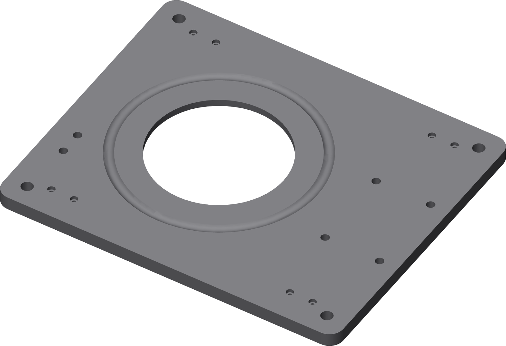

Print the base
300 × 250 × 12 mm, bottom face on the bed. This is one of the two plates in this project whose first layer is a single unbroken circle metres long. Watch it.

Settings
| Orientation | Bottom face on the bed |
| Walls | 6 |
| Top / bottom | 6 layers |
| Infill | 25% gyroid |
| Support | None |
| Brim | Not inside the race |
Watch the first two layers
The 165 mm ball race round this plate means a point on that loop cools for a full lap before the nozzle comes back to it. Two plates failed there in the first layer or two while every other part in the tree came off the same profile clean. Stay with it until layer three is down.
Gate — before it comes off the plate
The race groove is one continuous, unlifted ring. Deburr it with a plastic scraper only. Anything abrasive changes the groove's radius, and a changed radius becomes axial runout you cannot adjust out.